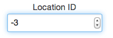

How to make type="number" to positive numbers only
currently I have the following code
<input type="number" />
it comes out to something like this

The little selector things on the right allow the number to go into negative. How do I prevent that?
I am having doubts about using type="number", it is causing more problems
than it is solving, I am going to sanity check it anyways, so should I just go
back to using type="text"?
Answer
Add a min attribute
<input type="number" min="0">
Suggest
I have found another solution to prevent negative number.
<input type="number" name="test_name" min="0" oninput="validity.valid||(value='');">